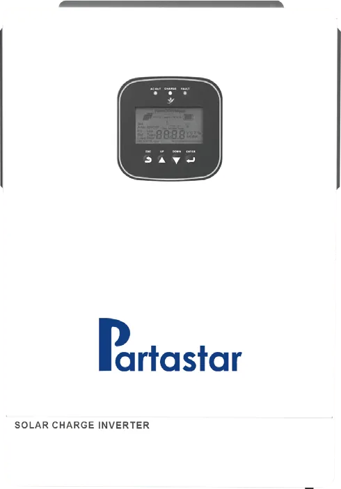
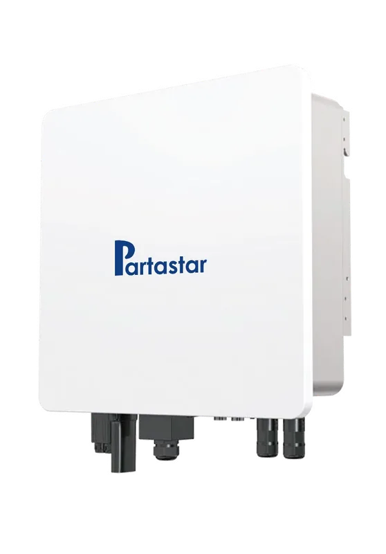
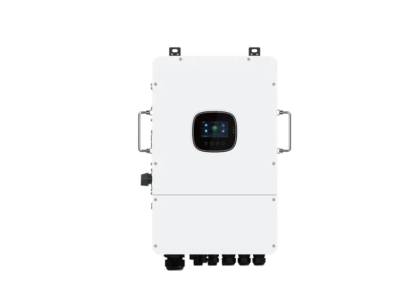
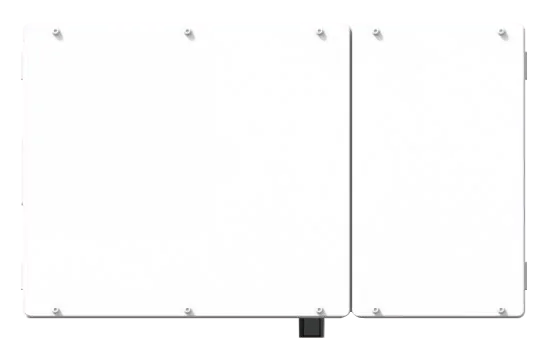
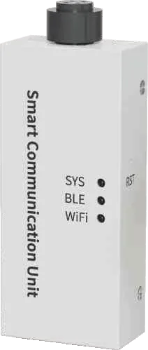

Басты бет / Инверторлар
Инверторлар
Гибридті инверторлар. Бір фазалы, үш фазалы, жоғары вольтты және Америка стандарты.

Еуропа стандартты бір фазалы гибридті инвертор
Төртбұрышты, шағын тік дизайн. Таза ақ құйма панель. Үй ішіндегі қабырғаға ілінеді немесе тік қойылады. Жоғары жиілікті инвертор технологиясы: түрлендіру тиімділігі жоғары, жауабы тез.
Қуат
- 24V 3.6 кВт
- 24V 4.2 кВт
- 51.2V 6.2 кВт
- 51.2V 12 кВт

Төмен вольтты үш фазалы гибридті инвертор
Мығым біртұтас корпус, дөңгелектелген қорғаныс бұрыштары. Үй ішіне де, сыртына да орнатылады. Кең таралған үш фазалы желі кернеулерін қолдайды, шығысы тұрақты. Үй, өнеркәсіп және коммерция саласындағы көп қолданысқа арналған.
Қуат
- 8 кВт
- 10 кВт
- 12 кВт
- 15 кВт
- 25 кВт

Еуропа стандартты жоғары вольтты гибридті инвертор
Өте жұқа, шағын біртұтас корпус. Үй ішіне де, сыртына да қабырғаға ілінеді. Жоғары вольтты үш фазалы желіні қолдайды. Өнеркәсіп, коммерция және үлкен үйлердің жоғары қуатты қолданысына арналған.
Қуат
- 20 кВт
- 30 кВт
- 40 кВт
- 50 кВт
- 60 кВт
- 80 кВт
- 100 кВт
- 125 кВт

Америка стандартты инвертор (110V / 220V)
110V және 220V бөлінген фазалы желілерге арналған. Мығым біртұтас корпус, үй ішіне де, сыртына да орнатылады.
Қуат
- 110V: 3 кВт
- 3.6 кВт
- 4 кВт
- 5 кВт
- 6.2 кВт
- 220V бөлінген фаза: 3 кВт
- 5 кВт
- 6 кВт
- 10 кВт
- 12 кВт

Ақылды байланыс модулі (Smart Communication Dongle)
Энергия жүйесін қай уақытта, қай жерде болса да басқарыңыз. Энергия тұтыну мен өндіруді нақты уақытта бақылаңыз. Жасанды интеллект басқаруы: қашықтан бақылау, қашықтан дабыл, басқару және қызмет көрсету BESS-тің қауіпсіз әрі тиімді жұмысын қамтамасыз етеді.
- Орнатуы оңай, қосқаннан-ақ жұмыс істейді
- Ақылды, икемді, баптауы оңай
- Қауіпсіз, сенімді, деректер қорғалған